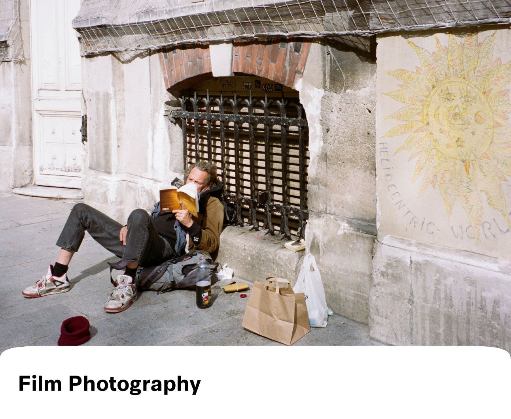

PRODUCT DESIGN
OTHER WORK
ABOUT
A collection of my other passions
.
Marketing
Art

Writing
Essays
Masterpieces of Western Philosophy:
Essay about Friedrich Nietzsche’s
On the Genealogy of Morals
and David Fincher’s
Fight Club
.
University Writing & Data Science
: Essay about the use of technology, such as cameras and sensors, in art installations.
Political Theory:
Essay about political correctness and its use of censorship to stifle the dismantling of marginalization.
Power, Rights, and Social Justice:
Essay about Thomas Hobbes’
Leviathan
and the Black Panther Movement.
Masterpieces of Western Art:
Essay about Laura Owens’ signature light painting style and how it informs her work.
East Asian Buddhism:
Essay about pre-Buddhist notions of afterlife in China and Japan and how their infusion into Buddhist practices was vital for Buddhism’s transmission and success.
Publications
Book:
Second Guessing
, A Collection of Short Stories and Poetry.
The Columbia Spectator:
KSA presents “Rebirth,” a tribute to the intersectionality of traditional and modern Korean culture.
The Columbia Spectator:
CUBE’s ‘Don Quixote’ weaves whimsy and beauty, displays talents of all-inclusive dance group.
Fiction
Short Story:
Winter.
Short Story:
Rochester.
Back to Top